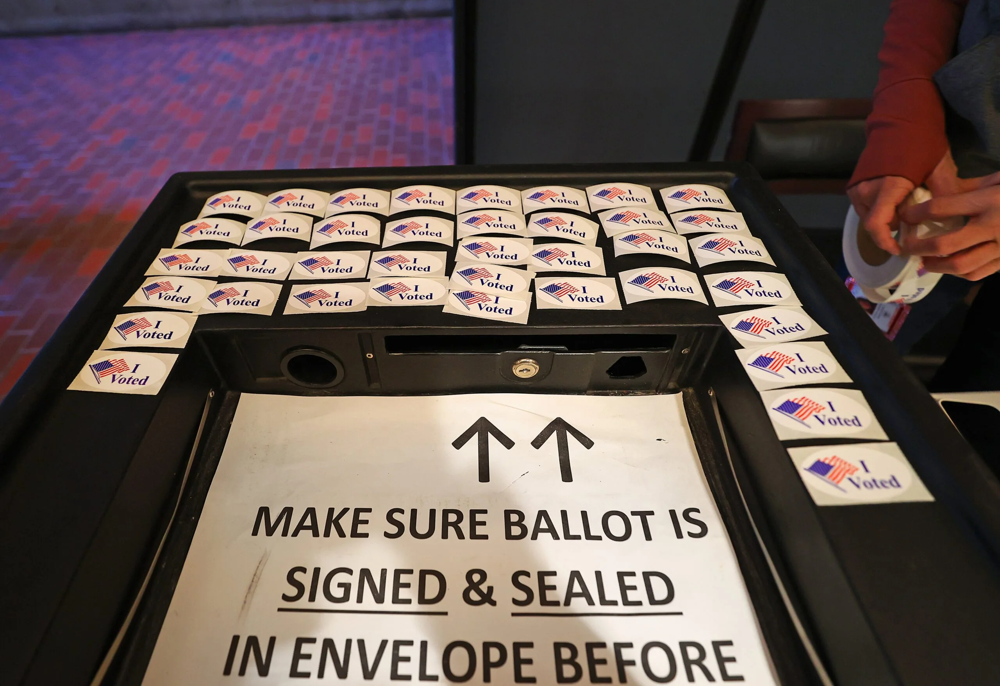
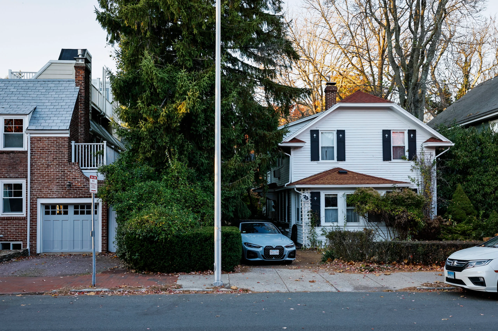
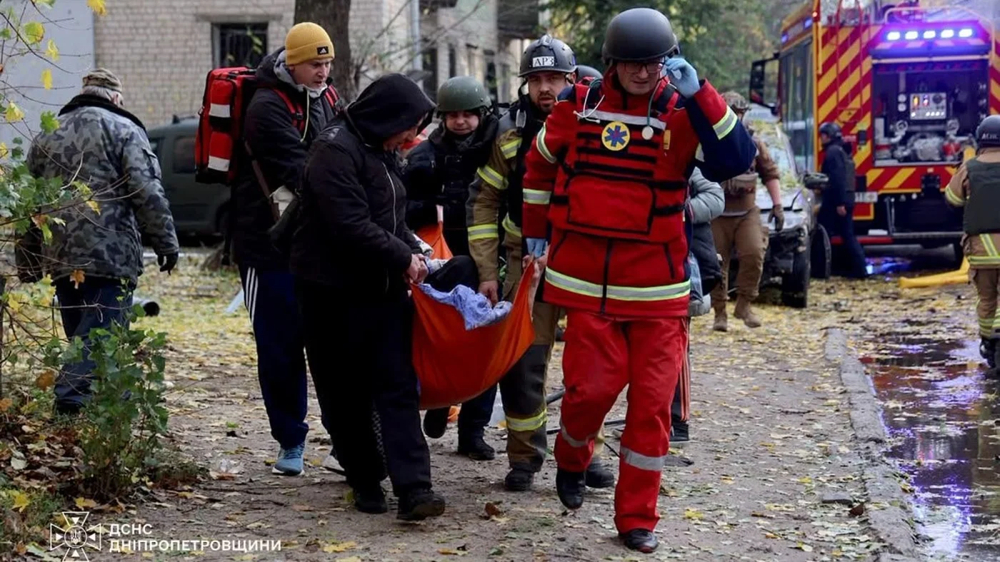
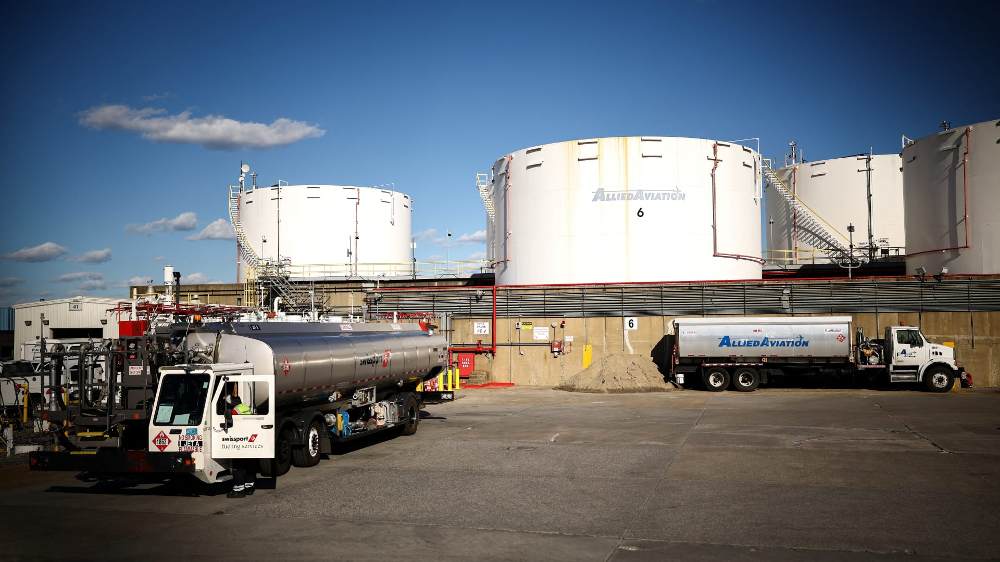
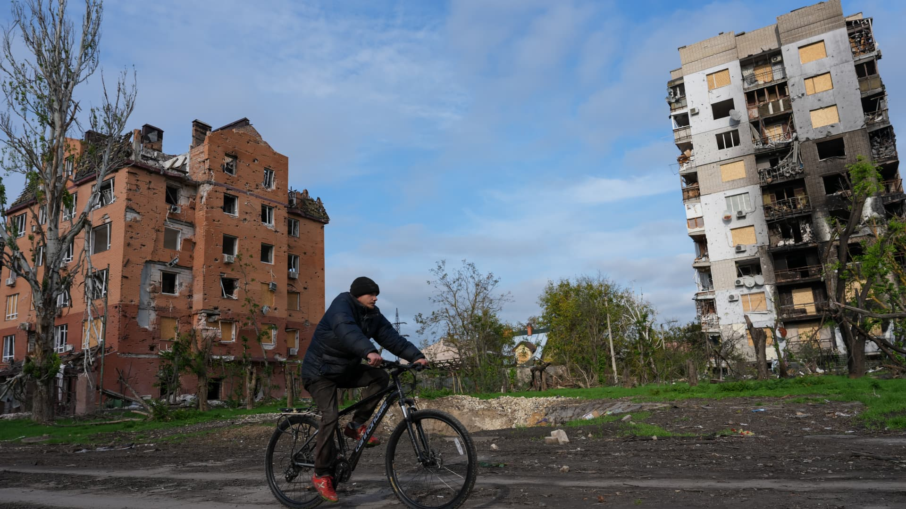
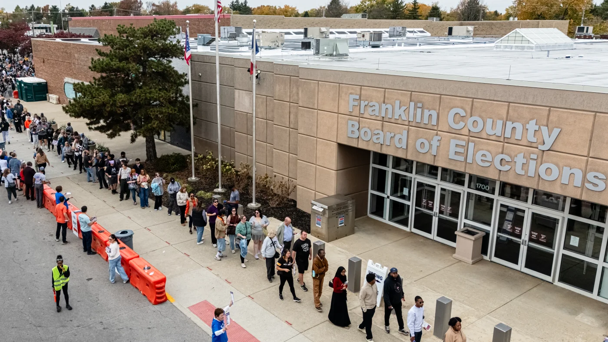

01
2026年实时选举结果：马萨诸塞州第8号提案，废除娱乐性大麻
2026 live election results: Mass. Ballot Question 8, repealing recreational marijuana
选举之夜，投票结果正在统计中。
Votes are being counted on election night.
原始报道 / Original source ↗DAILY NEWS · 每日新闻简报
Independent AI-assisted summaries of linked reports. Headlines, dates and source URLs are supplied by NewsAPI; summaries are not independent verification of full articles. Please read original reports for details.
2026 live election results: Mass. Ballot Question 8, repealing recreational marijuana
选举之夜，投票结果正在统计中。
Votes are being counted on election night.
原始报道 / Original source ↗
2026 live election results: The 9 Massachusetts ballot questions
选举之夜，投票结果正在统计中。
Votes are being counted on election night.
原始报道 / Original source ↗
2026 live election results: Mass. Ballot Question 7, the ‘starter homes’ measure
选举之夜，投票结果正在统计中。
Votes are being counted on election night.
原始报道 / Original source ↗Congressional election results: Will Mass. send only Dems back to DC again?
民主党正在努力保住马萨诸塞州的一个参议院席位和所有九个众议院席位。
Democrats are seeking to defend a U.S. Senate seat in Massachusetts and all nine of the state's seats in the U.S. House.
原始报道 / Original source ↗布伦特原油与WTI美国原油最新市场行情。
Brent and WTI crude oil market quotations.
价格及更新时间以行情提供方为准。
Stock market after midterm elections: What S&P 500 history shows
中期选举历史上通常会为标准普尔500带来强劲的一年。
Midterms historically precede a strong year for the S&P 500.
原始报道 / Original source ↗
Death toll hits 29 after Russian strike on Ukrainian aid site, with 48 still missing
俄罗斯发射了289架攻击无人机和多枚导弹，泽连斯基总统在网上发布了相关信息。
Russia launched 289 attack drones and missiles across nine regions.
原始报道 / Original source ↗
Crude oil prices fall for second day as market hopes for diplomatic resolution to Iran war
在美国和伊朗总统表示愿意寻求外交解决方案后，油价反弹。
The rebound in oil prices comes after signals of a diplomatic solution.
原始报道 / Original source ↗
Fake nuclear warnings in Ukraine as Moscow, Kyiv report separate cyberattacks on emergency apps
俄罗斯和乌克兰均报告了对其警报系统的网络攻击。
Both Russia and Ukraine report cyberattacks on their alerting systems.
原始报道 / Original source ↗
It's Election Day. Control of Congress is on the line, and what else you need to know
今天的选举结果将于东部时间下午6点开始公布。
Results will start to come in at 6 p.m. ET.
原始报道 / Original source ↗Control of Congress is at stake today. And, judge to consider motion in Clancy case
选举日到来，选民前往投票站，可能改变国会控制权。
Election Day is here, and voters are heading to the polls.
原始报道 / Original source ↗